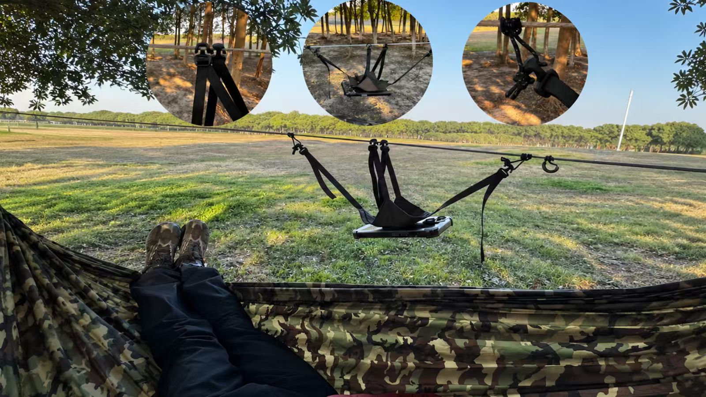
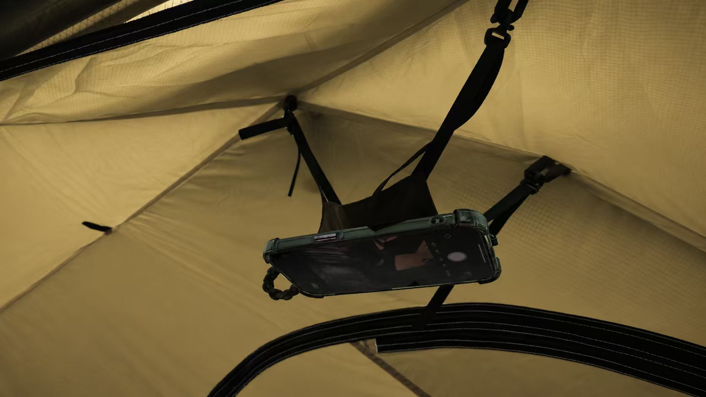

MY ARMS GOT TIRED FIRST.
Hammock Ridgeline Phone Holder
I spend a lot of nights hammock camping, and one small annoyance kept coming back: watching a video meant holding my phone above my face the whole time. A hammock is supposed to be relaxing. My arms disagreed.
I looked at hammock phone holders already out there. Some used bulky plastic parts—one more thing to pack, carry, and eventually forget. Others hung the phone inside a clear plastic pouch, which worked, but put a layer of plastic between me and the screen. I wanted something smaller, simpler, and easy to leave on the hammock all the time.
My solution uses magnets to hold the phone and four adjustable webbing straps to suspend it from the hammock ridgeline. By changing the length of the straps, I can adjust both the position and angle of the screen, whether I’m lying on my back or turning to one side. When I’m done, it simply stays on the hammock. It’s small enough that I never need to take it off—which also means I can’t forget it on my next trip.
The finished design was granted a China Design Patent: ZL 2024 3 0832830.5.

